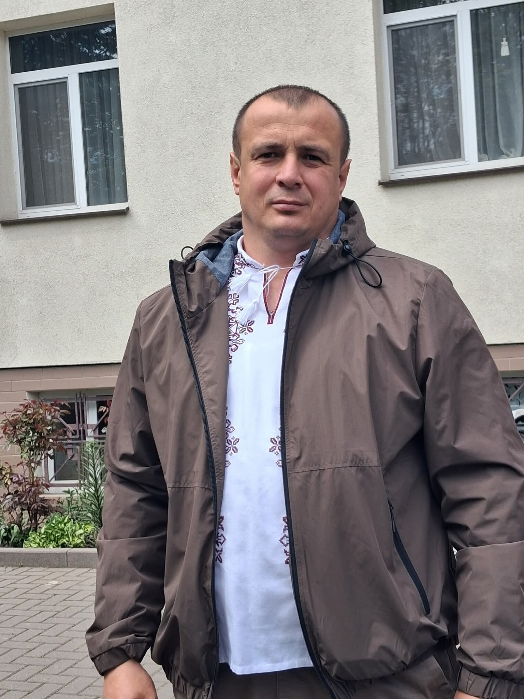
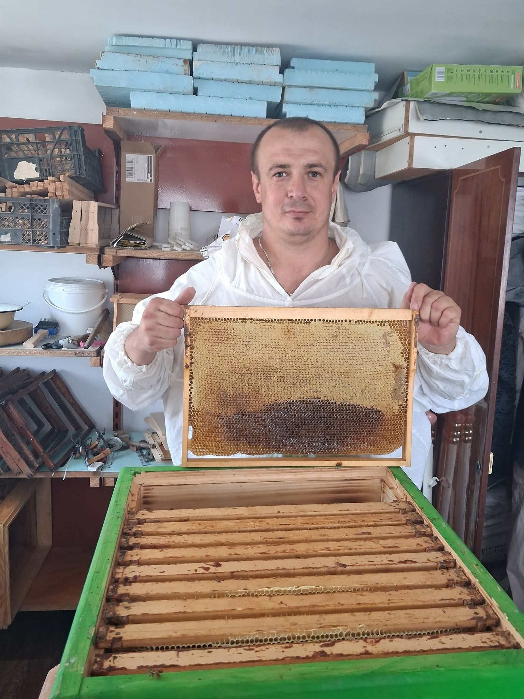

FILE 01 · PERSONAL RECORD
Досьє
на тата.
Документ, який офіційно підтверджує: Ви — людина з характером.

SUBJECT / 00102 / ОСОБЛИВІ НАВИЧКИ
Ваші
суперсили.
Сім'я
Вмієте бути поруч тоді, коли це справді потрібно.
Практичність
Якщо щось можна зробити — Ви, швидше за все, це зробите.
Характер
Свою думку Ви точно вмієте відстоювати.
Гумор
Деякі Ваші жарти вже давно стали сімейною класикою.

FIELD ACTIVITY / 04
Окремий пункт
— бджоли.
Тому що у Вашому досьє
без цього просто не можна.
03 / ВИСНОВОК
Досьє закрито.
Але історія триває.
39 — це не фінальний рівень. Це просто ще одна красива цифра в історії, яку ми продовжуємо разом.
Перейти до архіву →